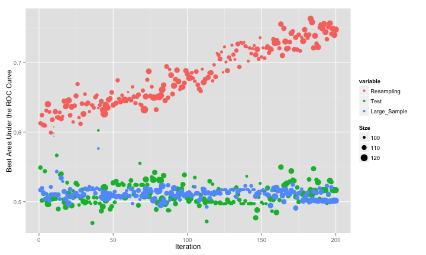
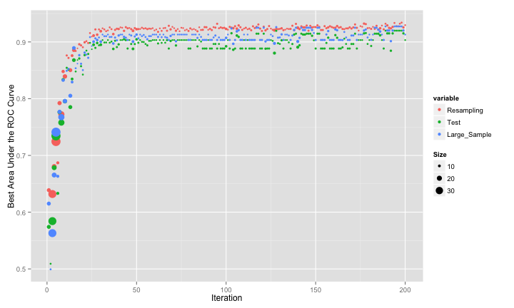
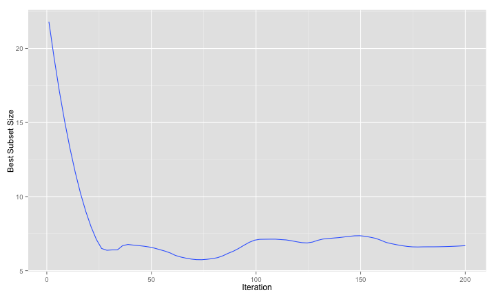

Feature Selection 3 - Swarm Mentality
“Bees don’t swarm in a mango grove for nothing. Where can you see a wisp of smoke without a fire?” - Hla Stavhana
In the last two posts, genetic algorithms were used as feature wrappers to search for more effective subsets of predictors. Here, I will do the same with another type of search algorithm: particle swarm optimization.
Like genetic algorithms, this search procedure is motivated by a natural phenomenon, such as the movements of bird flocks. An excellent reference for this technique is Poli et al (2007). The methodology was originally developed for optimizing real valued parameters, but was later adapted for discrete optimization by Kennedy and Eberhart (1997).
The optimization is initiated with configurations (i.e. multiple particles). In our case, the particles will be different predictor subsets. For now, let’s stick with the parameters being real-valued variables. A particular value of a particle is taken to be it’s position. In addition to a position, each particle has an associated velocity. For the first iteration, these are based on random numbers.
Each particle produces a fitness value. As with genetic algorithms, this is some measure of model fit. The next candidate set of predictors that a particle evaluates is based on it’s last position and it’s current velocity.
A swarm of particle are evaluated at once and the location of the best particle is determined. As the velocity of each particle is updated, the update is a function of the:
- previous velocity,
- last position and
- the position of the best particle
There are other parameters of the search procedure, such as the number of particles or how much relative weight the positions of the individual and best particle are used to determine the next candidate point, but this is the basic algorithm in a nutshell.
As an example, consider optimzing the Rosenbrock function with two real-valued variables (A and B):
fitness = 100*(B - A^2)^2 + (A - 1)^2
The best value is at (A = 1, B = 1). The movie below shows a particle swarm optimization using 100 iterations. The predicted best (solid white dot) is consistently in the neighborhood of the optimum value at around 50 iterations. You may need to refresh your browser to re-start the animation.
 When searching for subsets, the quantities that we search over are binary (i.e. the predictor is used or excluded from the model). The description above implies that the position is a real valued quantity. If the positions are centered around zero, Kennedy and Eberhart (1997) suggested using a sigmoidal function to translate this value be between zero and one. A uniform random number is used to determine the binary version of the position that is evaluated. Other strategies have been proposed, including the application of a simple threshold to the translated position (i.e. if the translated position is above 0.5, include the predictor).
When searching for subsets, the quantities that we search over are binary (i.e. the predictor is used or excluded from the model). The description above implies that the position is a real valued quantity. If the positions are centered around zero, Kennedy and Eberhart (1997) suggested using a sigmoidal function to translate this value be between zero and one. A uniform random number is used to determine the binary version of the position that is evaluated. Other strategies have been proposed, including the application of a simple threshold to the translated position (i.e. if the translated position is above 0.5, include the predictor).
R has the pso package that implements this algorithm. It does not work for discrete optimization that we need for feature selection. Since its licensed under the GPL, I took the code and removed the parts specific to real valued optimization. That code is linked that the bottom of the page. I structured it to be similar to the R code for genetic algorithms. One input into the modified pso function is a list that has modules for fitting the model, generating predictions, evaluating the fitness function and so on. I’ve made some changes so that each particle can return multiple values and will treat the first as the fitness function. I’ll fit the same QDA model as before to the same simulated data set. First, here are the QDA functions:
qda_pso <- list(
fit = function(x, y, ...)
{
## Check to see if the subset has no members
if(ncol(x) > 0)
{
mod <- train(x, y, "qda",
metric = "ROC",
trControl = trainControl(method = "repeatedcv",
repeats = 1,
summaryFunction = twoClassSummary,
classProbs = TRUE))
} else mod <- nullModel(y = y) ## A model with no predictors
mod
},
fitness = function(object, x, y)
{
if(ncol(x) > 0)
{
testROC <- roc(y, predict(object, x, type = "prob")[,1],
levels = rev(levels(y)))
largeROC <- roc(large$Class,
predict(object,
large[,names(x),drop = FALSE],
type = "prob")[,1],
levels = rev(levels(y)))
out <- c(Resampling = caret:::getTrainPerf(object)[, "TrainROC"],
Test = as.vector(auc(testROC)),
Large_Sample = as.vector(auc(largeROC)),
Size = ncol(x))
} else {
out <- c(Resampling = .5,
Test = .5,
Large_Sample = .5,
Size = ncol(x))
print(out)
}
out
},
predict = function(object, x)
{
library(caret)
predict(object, newdata = x)
}
)
Here is the familiar code to generate the simulated data:
set.seed(468)
training <- twoClassSim( 500, noiseVars = 100,
corrVar = 100, corrValue = .75)
testing <- twoClassSim( 500, noiseVars = 100,
corrVar = 100, corrValue = .75)
large <- twoClassSim(10000, noiseVars = 100,
corrVar = 100, corrValue = .75)
realVars <- names(training)
realVars <- realVars[!grepl("(Corr)|(Noise)", realVars)]
cvIndex <- createMultiFolds(training$Class, times = 2)
ctrl <- trainControl(method = "repeatedcv",
repeats = 2,
classProbs = TRUE,
summaryFunction = twoClassSummary,
## We will parallel process within each PSO
## iteration, so don't double-up the number
## of sub-processes
allowParallel = FALSE,
index = cvIndex)
To run the optimization, the code will be similar to the GA code used in the last two posts:
set.seed(235)
psoModel <- psofs(x = training[,-ncol(training)],
y = training$Class,
iterations = 200,
functions = qda_pso,
verbose = FALSE,
## The PSO code uses foreach to parallelize
parallel = TRUE,
## These are passed to the fitness function
tx = testing[,-ncol(testing)],
ty = testing$Class)
Since this is simulated data, we can evaluate how well the search went using estimates of the fitness (the area under the ROC curve) calculated using different data sets: resampling, a test set of 500 samples and large set of 10,000 samples that we use to approximate the truth.
The swarm did not consistently move to smaller subsets and, as with the original GA, it overfits to the predictors. This is demonstrated by the increase in the resampled fitness estimates and mediocre test/large sample estimates:
 One tactic that helped the GA was to bias the algorithm towards smaller subsets. For PSO, this can be accomplished during the conversion from real valued positions to binary encodings. The previous code used a value of 1 for a predictor if the “squashed” version (i.e. after applying a sigmoidal function) was greater than 0.5. We can bias the subsets by increasing the threshold. This should start the process with smaller subsets and, since we raise the criteria for activating a predictor, only increase the subset size if there is a considerable increase in the fitness function. Here is the code for that conversion and another run of the PSO:
smallerSubsets <- function(x)
{
## 'x' is a matrix of positions centered around zero. The
## code below uses a logistic function to "squash" then to
## be between (0, 1).
binary <- binomial()$linkinv(x)
## We could use ranom numbers to translate between the
## squashed version of the position and the binary version.
## In the last application of PSO, I used a simple threshold of
## 0.5. Now, increase the threshold a little to force the
## subsets to be smaller.
binary <- ifelse(binary >= .7, 1, 0)
## 'x' has particles in columns and predicors in rows,
## so use apply() to threshold the positions
apply(binary, 2, function(x) which(x == 1))
}
set.seed(235)
psoSmallModel <- psofs(x = training[,-ncol(training)],
y = training$Class,
iterations = 200,
convert = smallerSubsets,
functions = qda_pso,
verbose = FALSE,
parallel = TRUE,
tx = testing[,-ncol(testing)],
ty = testing$Class)
The results are much better:

The large-sample and test set fitness values agree with the resampled versions. A smoothed version of the number of predictors over iterations shows that the search is driving down the number of predictors and keeping them low:

And here are the large-sample ROC curves so far:
For the simulated data, the GA and PSO procedures effectively reduced the number of predictors. After reading the last few posts, one could easily remark that I was only able to do this since I knew what the answers should be. If the optimal subset size was not small, would these approaches have been effective? The next (and final) post in this series will apply these methods to a real data set.
The code for these analyses are [here][1] and the modified PSO code is [here][2]. Thanks to Claus Bendtsen for the original pso code and for answering my email.